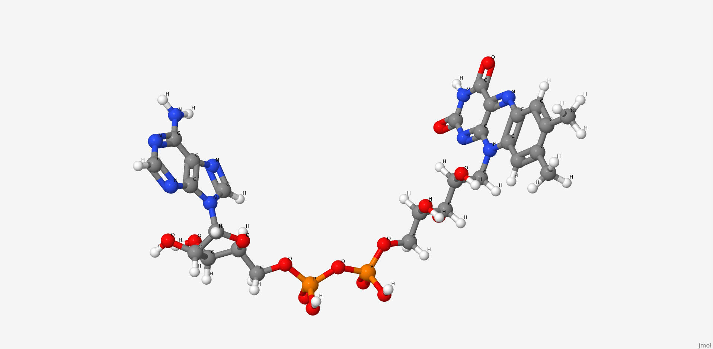
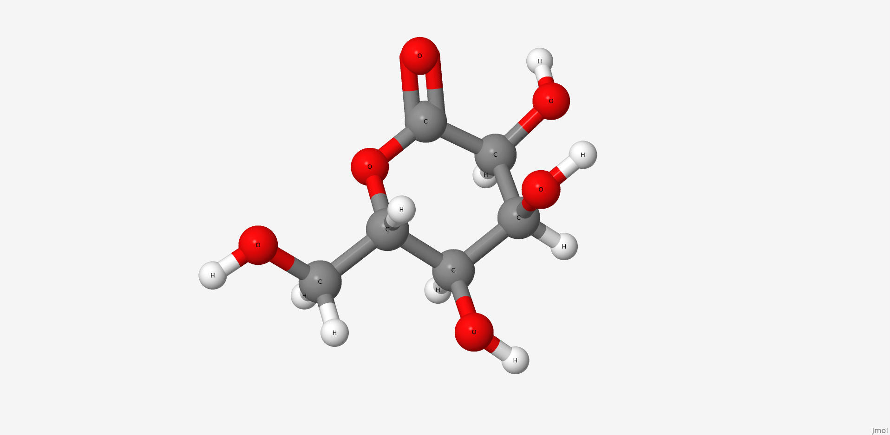

Описание FAD-глюкозодегидрогеназы A. flavus
ФАД-зависимая глюкозодегидрогеназа (UNIPROT, RCSB) функционально относится к ферментам оксидоредуктазам, она катализирует окисление первой гидроксильной группы глюкозы. Оксидоредуктазы способны использовать целый ряд химических соединений. Как превичный акцептор электронов, ФАДЗГД использует для этих целей флавинадениндинуклеотид . Рассматриваемая ФАДЗГД является внеклеточным ферментом. В настоящее время этот белок привлекает внимание ученых, как компонент сенсоров, чувствительных к глюкозе. ФАДЗГД имеет ряд преимуществ в отношении других ферментов: она имеет большую специфичность к субстрату, чем пирролохинолин-зависимая глюкозодегидрогеназа и не реагирует с кислородом, как это делает золотой стандарт определения глюкозы глюкозооксидаза.
Сайт связывания лиганда.
Две длинные петли: одна между H2 и H3, другая между B16 и H14 пересекаются и образуют узкий канал.
ФАД занимает место в белковом кармане, и покрывается элементами вторичной стуктуры, как двумя
крышками. Изоаллоксазиновое кольцо лиганда меняет конформацию при восстановлении: плоская структура
немного сгибается. Место связывания ФАД содержит сайт гликозилирования Асп69 (возможно, для
ингибирования активности фермента).
Белок связывает две молекулы глюкозы: на внешней и внутренней поверхности. В каталитическом центре субстрат взаимодействует с Tyr53, Arg501, Asn503, His505, His548. Leu401 и Trp415, образующие гидрофобную среду вокруг молекулы субстрата. Интересно, что эти остатки являются достаточно консервативными среди других родственных ФАДЗГД белков (AnGOx, PaGOx). Отличием исследуемого белка является остаток Glu413, который образует связь с сахаром, усиливая таким образом специфичность распознавания субстрата.
Описание лигандов FAD-глюкозодегидрогеназы
1. Flavin adenine dinucleotide
Флавинадениндинуклеотид это продукт конденсации рибофлавина и аденозиндифосфата. Коэнзим ряда аэробных дегидрогеназ. В том числе и исследуемого нами фермента.
| Физико-химические свойства ФАД | |
| Название по IUPAC | [[(2R,3S,4R,5R)-5-(6-aminopurin-9-yl)-3,4-dihydroxyoxolan-2-yl]methoxy-hydroxyphosphoryl] [(2R,3S,4S)-5-(7,8-dimethyl-2,4-dioxobenzo[g]pteridin-10-yl)-2,3,4-trihydroxypentyl] hydrogen phosphate |
| Химическая формула (SMILES) | CC1=CC2=C(C=C1C)N(C3=NC(=O)NC(=O)C3=N2)CC(C(C(COP(=O)(O)OP(=O)(O)OCC4C(C(C(O4)N5C=NC6=C5N=CN=C6N)O)O)O)O)O |
| Брутто-формула | C27H33N9O15P2 |
| Молярная масса | 785.557 М |
| PubChem CID | 643975 |
2. Gluconolactone
Глюконолактон это лактон, окисленное соединение глюкозы. Глюконолактон это полигидроксильная кислота, способная хелатировтаь металлы, а также может реагировать со свободными радикалами. Это вещество часто используется в структурном анализе вместо глюкозы. Его ценные свойства сводятся к тому, что он образует более стабильные комплексы с белком. По этой причине его находят в структуре исследуемого белка.
| Физико-химические свойства глюконолактона | |
| Название по IUPAC | (3R,4S,5S,6R)-3,4,5-trihydroxy-6-(hydroxymethyl)oxan-2-one |
| Химическая формула (SMILES) | C(C1C(C(C(C(=O)O1)O)O)O)O |
| Брутто-формула | C6H10O6 |
| Молярная масса | 178.14 М |
| PubChem CID | 7027 |
Визуализация связей FAD-глюкозодегидрогеназы в JSMol
Показать водородные связи:
| Параметры связей в FAD-глюкозодегидрогеназы | ||||
| # | Имена остатков | Тип связи | Длина связи (Å) | Угол связи (°) |
| 1 | H:CYS'140 - H:CYS'206 | Дисульфидный мостик | 2,0 (S-S) | 089,3 (C-S-S-C) |
| 2 | H:GLY'104 - L:SER'043 | Водородная связь | 2,7 (O-O) | 144.1 (C=O-O) |
| 3 | L:ILE'117 - H:GLY'129 | Водородная связь | 3,0 (O-O) | 140,4 (C=O-N) |
| 4 | L:TYR'032 - L:ASN'028 | Водородная связь | 2,9 (O-N) | 136,8 (C=O-N) |
| 5 | H:GLU'100B- L:LYS'030 | Солевой мостик | 2,5 (O-N) | 161.8 (C=O-N) |
| 6 | L:ASP'082 - L:ARG'061 | Солевой мостик | * | 125.58 ([ASP]82:L.CG - [ASP]82:L.OD2 - [ARG]61:L.NH1) |
Описание FAD-глюкозодегидрогеназы A. flavus
1YEK - эстеразоподобное каталитическое антитело D2.3 мыши (Mus musculus), участвующее в реакции гидролиза 4-нитробензоловых и 4-нитрофениловых эфиров.
Для неё характерно ингибирование по принципу обратной связи, но только в отношении нитробензола. Это связано с особенностями механизма высвобождения продуктов: 4-нитрофенол слабее взаимодействует с гидрофобным окружением в активном центре, чем нитробензол, за счёт гидрофильной OH-группы, а также в комплексе с нитрофенолом отсутствует водородная связь Asn L34 с -NO2 из-за увеличенного размера лиганда по сравнению с нитробензолом. В результате 4-нитрофенол легко высвобождается из активного центра и не выступает в качестве ингибитора.
Мы изучили строение комплекса этого антитела с 4-нитрофенолом.
Визуализация связей эстеразоподобного антитела в JSMol
Показать связи:
Описание гидрофобного ядра эстеразоподобного антитела A. flavus
В гидрофобном ядре атомы достаточно плотно упакованы, атомы на расстоянии 3 ангстрем уже формируют заметное окружение, а на расстоянии 5 ангстрем от выбранного остатка полностью покрывают его поверхность. Среднее расстояние между соседними не связанными ковалентно атомами в ядре варьирует от 3 до 4 ангстрем, что, учитывая радиусы атомов (1.4-1.85 Å), не позволяет молекуле воды (как и практически любой другой) находиться внутри него.
| Параметры связей в эстеразоподобном антителе | ||||
| # | Имена остатков | Тип связи | Длина связи (Å) | Угол связи (°) |
| 1 | H:CYS'140 - H:CYS'206 | Дисульфидный мостик | 2,0 (S-S) | 089,3 (C-S-S-C) |
| 2 | H:GLY'104 - L:SER'043 | Водородная связь | 2,7 (O-O) | 144.1 (C=O-O) |
| 3 | L:ILE'117 - H:GLY'129 | Водородная связь | 3,0 (O-O) | 140,4 (C=O-N) |
| 4 | L:TYR'032 - L:ASN'028 | Водородная связь | 2,9 (O-N) | 136,8 (C=O-N) |
| 5 | H:GLU'100B- L:LYS'030 | Солевой мостик | 2,5 (O-N) | 161.8 (C=O-N) |
| 6 | H:GLU'100B - L:LYS'030 | Солевой мостик | 2.5 (C=O- -H-N) | * |